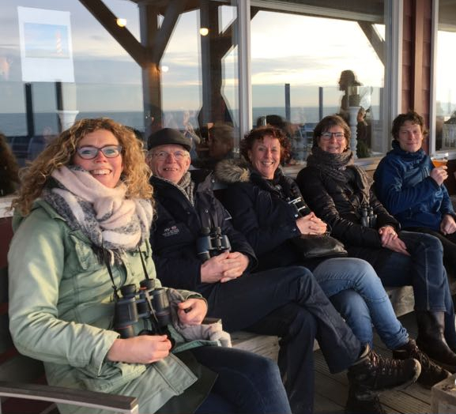

Colofon
Het spel is ontwikkeld door de “Werkgroep Moerenburg” in het kader van de IVN opleiding tot natuurgids.

- E.W.M Versteijn
- H.B. van de Rakt
- P.B. van der Vaart
- A.B. Musone
- J.C. Groenendijk
Administrator en website development: R. Sikma
(Foto's en teksten zij afkomstig van de werkgroep. Zo niet, dan is er gepoogd de belanghebbenden te achterhallen)